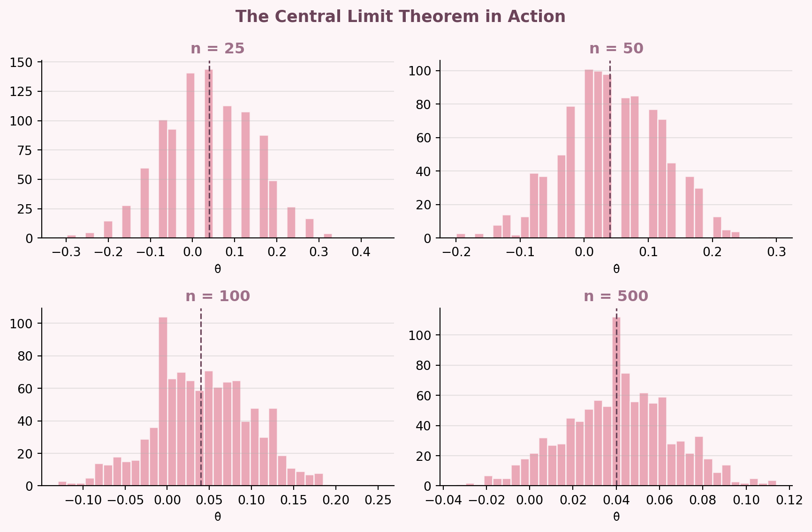

Simulating Key Ideas from Classical Frequentist Statistics
Python
A/B Testing
Simulation
Frequentist Statistics
Published
April 15, 2026
Introduction
Say you run a website with a newsletter sign-up form. You’ve got two versions of the prompt, the “call to action”, and you want to know which one actually gets people to subscribe:
CTA A: “Sign up for our newsletter here!”
CTA B: “Stay up to date by signing up!”
They seem basically the same. But “basically the same” isn’t a data-driven take. To actually figure this out, we run an A/B test: randomly assign each visitor to see one of the two CTAs, see who signs up, and compare.
The randomization matters a lot here. By randomly assigning visitors, we make sure any difference in sign-up rates is because of the CTA and not because of something else, like what time of day it is or what kind of person happens to be browsing.
This blog post walks through the statistics behind that setup, using simulation so we can actually see how everything works.
The A/B Test as a Statistical Problem
Each visitor either signs up or they don’t, so we model their outcome as a draw from a Bernoulli distribution: with probability \(\pi\) they sign up (1), and with probability \(1 - \pi\) they don’t (0).
Since the two CTAs might perform differently, we let the sign-up probability differ between groups (\(\pi_A\) for group A and \(\pi_B\) for group B). The thing we actually care about is:
\[\theta = \pi_A - \pi_B\]
If \(\theta > 0\), CTA A wins. If \(\theta < 0\), CTA B wins. If \(\theta = 0\), they’re the same and we’ve done a lot of work for nothing.
Since we can’t observe \(\pi_A\) or \(\pi_B\) directly, we estimate \(\theta\) using the difference in sample proportions:
\[\hat\theta = \bar{X}_A - \bar{X}_B\]
Because each observation is just a 0 or 1, the sample mean is the proportion who signed up — so \(\bar{X}_A = \hat\pi_A\) and \(\bar{X}_B = \hat\pi_B\). Simple and interpretable.
Simulating Data
In real life we wouldn’t know \(\pi_A\) or \(\pi_B\) — that’s the whole point of running the test. But here we get to set them ourselves and see how well our estimator recovers the truth.
We’ll use \(\pi_A = 0.22\) and \(\pi_B = 0.18\), so the true difference is \(\theta = 0.04\). We simulate 1,000 visitors per group.
np.random.seed(42)pi_A, pi_B, n =0.22, 0.18, 1000data_A = np.random.binomial(1, pi_A, n)data_B = np.random.binomial(1, pi_B, n)print("Sample mean CTA A:", round(data_A.mean(), 4))print("Sample mean CTA B:", round(data_B.mean(), 4))print("Estimated difference:", round(data_A.mean() - data_B.mean(), 4))
Sample mean CTA A: 0.216
Sample mean CTA B: 0.178
Estimated difference: 0.038
Our estimate is pretty close to the true 0.04. Below, it is explained why that’s expected, how uncertain we should be about it, and what we can actually conclude from this.
The Law of Large Numbers
The Law of Large Numbers (LLN) says that as you collect more data, your sample mean gets closer and closer to the true population mean. It’s the reason we trust \(\hat\theta\) to be close to \(\theta\) when our sample is large.
To show this, we compute the element-wise differences between the two groups and track the running average as observations pile up:
At the start, the running average is all over the place — a few unlucky draws can throw it way off. But as the sample grows, the noise averages out and the estimate settles near 0.04. The chaos on the left side of the plot is the whole point: it’s showing us exactly why you can’t trust estimates from tiny samples. (Relevant foreshadowing for the peeking section.)
Bootstrap Standard Errors
A point estimate on its own only tells us so much. We also want to know how much we should trust it, how precise is our estimate of \(\theta\)?
That’s where the bootstrap comes in. The idea: since we can’t re-run the experiment, we simulate the variability of our estimator by resampling from the data we already have.
Draw a resample of size 1,000 with replacement from each group
They come out basically the same, which is reassuring. The bootstrap does a ton of computation to get to the same answer the formula gives for free. But it’s good to know both agree.
Using the bootstrap SE, our 95% confidence interval for \(\theta\) is:
The whole interval is above zero, which is already a good sign that CTA A is genuinely better.
The Central Limit Theorem
The Central Limit Theorem (CLT) is probably the most important result in intro stats. It says that no matter what the underlying distribution looks like, the sampling distribution of the sample mean becomes approximately Normal as your sample size grows. That applies to \(\hat\theta\) too even though our raw data are just 0s and 1s.
To see it happen, we simulate the sampling distribution of \(\hat\theta\) at four different sample sizes and plot the histograms:

At \(n = 25\) the histogram is choppy and kind of rough. By \(n = 100\) it’s starting to look bell-shaped, and at \(n = 500\) it’s smooth and nearly perfectly Normal, centered right on 0.04. This is why we can use Normal-based tests and confidence intervals in practice. Large samples give us Normality essentially for free, even when the data themselves are binary.
Hypothesis Testing
Now we can formally test whether the two CTAs actually produce different sign-up rates, or whether what we’re seeing is just noise.
We set up two hypotheses:
\(H_0: \theta = 0\) - the CTAs perform the same
\(H_1: \theta \neq 0\) — one CTA is better
By the CLT, \(\hat\theta\) is approximately Normal for large samples. Under \(H_0\), its mean is zero. Dividing by the standard error gives a test statistic that follows a standard Normal under the null:
The p-value tells us how likely we’d be to see a result this extreme if \(H_0\) were actually true. Small p-value = surprising result under the null = evidence against \(H_0\).
Quick note: this is sometimes called a t-test. A true t-test assumes Normal data and an exact t-distribution for the test statistic. Our data are Bernoulli, so we’re using the CLT to justify approximate Normality. It’s more accurately a z-test. For large samples the two are basically identical.
The p-value is below 0.05, so we reject \(H_0\). There’s statistically significant evidence that the two CTAs produce different sign-up rates. Since we set the true values ourselves, we know this is the right call — CTA A wins.
The T-Test as a Regression
This is something that initially sounds like a coincidence but is actually pretty useful: the two-sample test we just ran is mathematically equivalent to a simple linear regression.
Stack both groups into one dataset, with an outcome \(Y_i\) (1 = signed up, 0 = didn’t) and an indicator \(D_i\) (1 = saw CTA A, 0 = saw CTA B). Fit:
\[Y_i = \beta_0 + \beta_1 D_i + \varepsilon_i\]
What the coefficients mean:
\(\beta_0\) = expected outcome when \(D_i = 0\) = the B group sign-up rate, \(\hat\pi_B\)
\(\beta_0 + \beta_1\) = expected outcome when \(D_i = 1\) = the A group sign-up rate, \(\hat\pi_A\)
So \(\beta_1 = \pi_A - \pi_B = \theta\) — and \(\hat\beta_1\) is the same number as \(\hat\theta\)
The estimate and p-value match what we got from the manual test (the SE is slightly different because OLS uses a pooled variance, while our earlier formula kept the groups separate).
The regression framework generalizes naturally to more complex designs — add covariates to control for confounders, indicators for additional treatment arms, or interaction terms to test whether the CTA effect varies across subgroups. The two-sample t-test is just the simplest special case.
The Problem with Peeking
So far, we’ve run a single test on a complete dataset. But in practice, it’s tempting to check results early — and if things look significant, call it there.
Instead of waiting for all 1,000 visitors, you want to check results after every 100 — and if any of those 10 interim tests hits \(p < 0.05\), you can call it and move on.
This is called peeking, and it quietly breaks everything.
The issue: a single test at \(\alpha = 0.05\) has a 5% false positive rate. But every additional peek is another chance to get a false positive. Run 10 tests on the same accumulating data and the probability of at least one incorrect rejection is way above 5%.
Let’s see how bad it actually gets. We simulate 10,000 experiments where \(\pi_A = \pi_B = 0.20\) (no true difference) and peek every 100 observations:
np.random.seed(42)false_pos =0peek_at =range(100, 1001, 100)for _ inrange(10000): A = np.random.binomial(1, 0.20, 1000) B = np.random.binomial(1, 0.20, 1000)for k in peek_at: a, b = A[:k], B[:k] se = np.sqrt(a.mean()*(1-a.mean())/k + b.mean()*(1-b.mean())/k)if se ==0: continue z = (a.mean() - b.mean()) / seif2* (1- stats.norm.cdf(abs(z))) <0.05: false_pos +=1breakempirical_fpr = false_pos /10000print("Empirical false positive rate:", round(empirical_fpr, 4))
Empirical false positive rate: 0.1864
Table 4: The Cost of Peeking — H₀: πA = πB = 0.20
Approach
False Positive Rate
Single test (no peeking)
5.0%
10 peeks (every 100 obs)
18.6%
The false positive rate with peeking ends up around 3 to 4 times the nominal 5%. That means roughly 1 in 3 experiments where there’s no real difference would produce a “significant” result.
The fix isn’t to never look at data early. It’s to use methods built for sequential testing — like alpha spending or sequential probability ratio tests — that account for the multiple looks. But that’s a topic for another post.
Key Takeaway Section: -Randomization is non-negotiable It’s what makes your results causal, not just correlational. -Small samples are noisy Early results can be misleading—wait for enough data. -Look beyond the point estimate Confidence intervals tell you how uncertain your result is. -Significance isn’t everything A statistically significant effect might still be too small to matter. -Peeking breaks your test Checking results early inflates false positives and leads to bad decisions. -A/B tests = simple regression This makes it easy to extend with more variables or variants.
In the end, A/B testing isn’t just about finding a winner,it’s about making decisions you can trust.